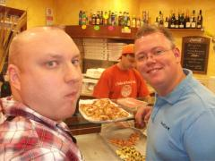

ROME WASN'T BUILT IN A DAY
So, my friends and countrymen, what is left to say about our latest expedition? Well I have learnt in the last 6 days, that the more experience James gets with these tours, the better they get and the more we - the paying public - get out of them.
SPLIT is a fantastic place. The East Europeans are by far the most relaxed and accommodating people I know (as well as the cheapest and that ain't a bad thing, is it?!) Swimming in the sea, basking in 34 degree heat, drinking cheap booze - it makes a religious person like me wonder whether our Great Lord was in fact born in Croatia. I couldn't imagine them stringing him up on a cross in the middle of nowhere, with only his thoughts and faith to keep him sane. They'd at least give him a 2 Kruna bottle of Lech, a meaty treat and 4 day old copy of the Daily Star. The long beaches are relaxing, even if you don't do those type of lazy hols (which I often don't) but it seems refreshing and uncrowded, that you also feel the need to get down to your speedos and have a dip in the clean looking sea, and don't worry if you haven't got the physique of B. Pitt. There are so many fat, blotchy naked German types strolling around, it makes even someone like me look like I'm Cristiano Ronaldo!
ANCONA is not the most interesting place in Italy. Admittedly, we were only there as a whistle stop. In which time we went round the rather bland, uninspiring town centre, visited a war cemetery (mainly full of Mafia bosses) and missed our train cos the stupid bird at the train station told us the wrong info. (Oh and she also forgot to mention the beautiful, idyllic surroundings just out of the town centre). One thing I did notice though was the blatant rudeness that the Italian public have. They barge you off trains, they try and knock you over on zebra crossings and even when the talk, half the time it sounds like they want you to go away or want to start an argument with you.
ROMA, and the VATICAN CITY, though, are of high sophistication and ultimate beauty. The old buildings, like the Colosseum, Pantheon, Sistine Chapel, etc, take the architectural impression that they are from another planet, the women look mostly like catwalk models and the late night squares, where drinking and partying go hand-in-hand, seem friendly and chilled out. It kind of makes you think 'how come London look's like civilisation has gone backwards', which is a shame and maybe we should learn from these Roma people.
And what of our tour? Well I think we improved Anglo/Irish relations with the rest of Europe.
James has matured into the perfect tour guide, John is now a smooth talking Euro-ite, Shauny, still young in body if not asked by Canadian women how old he is, is slowly realising that the more walking tours you put in, the more sweat you produce and the more food and beer you crave later on. Steve, except for the odd hiccup, is at his best after a few Jaegers and will talk to anyone about anything (if they can understand him). And G. Budd, has started to realise there is a whole new world out there, that needs exploring, (not just Brazilian women!)
Here's to more back-packing, more tours and more bridges being built between ourselves and our Euro neighbours...
Good Times!
EAST
Photographs
{kind=link}
